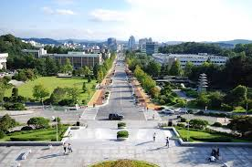
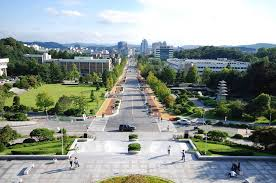

삼성 드림클래스의 취지
교육과 일자리를 통한 양극화 해소사회 양극화가 심화되고 빈곤가정이 늘고 있습니다.
이들의 가장 큰 불안은 내 아이가 제대로 교육받지 못하고 번듯한 직업을 갖지 못해 가난이 대물림되지 않을까일 것입니다.
가난이 대물림되지 않고 계층간 이동이 쉬운 사회, 누구나 노력하면 꿈과 희망을 이루는 사회가 될 수 있도록 우리 모두의 노력이 필요합니다.
이를 위해 삼성드림클래스는 교육 환경이 열악한 중학생들에게 방과 후에 학습을 지원하고 있습니다.
삼성드림클래스 학생들이 좋은 고등학교, 대학교에 진학하여 좋은 직업을 갖게 함으로써 불안을 희망으로 바꾸고 우리 사회가 통합으로 나아가는 밑거름이 되고자 합니다.
-삼성드림클래스-
삼성 드림클래스 방학캠프
드림클래스는 학습 의지는 있으나 정규 수업 외 사교육 혜택을 받지 못하는 중학생들에게 방학 중 주요 교과목(영어·수학)에 대한 학습을 무상으로 지원합니다.방학캠프 참여대상은 교육 환경이 열악한 읍·면·도서지역 소재의 중학교에 다니거나 국가와 사회를 위해 헌신하는 군부사관, 소방관, 유공자 자녀로 지방에 거주하여
사교육 혜택을 받지 못하는 중학생 1, 2학년이며, 수업은 방학 중 지역별 주요 대학교에서 3주간 합숙 캠프로 진행합니다.
드림클래스는 교육 기회의 불평등 현상을 완화시켜 학업 성취도를 향상시킬 수 있는 배경을 만들어 Fair Start의 기회를 마련하고자 하며, 삼성, 대학생 수업강사,
대학생 진행강사가 유기적으로 관계를 맺어 구조적 소외 지역의 중학생에게 3주간 학습은 물론 대학교 동아리, 문화 체험 등 다양한 경험을 하도록 제공하여
학업성취도 향상의 기쁨 외에도 다양한 즐거움을 맛볼 수 있게 하는 프로그램입니다.
내가 캠프에 참여한 충남대학교
<충남대학교 정문 위치>
 


D조 : 과목 및 선생님
| 이름 | 성별 | 과목 | 반 |
|---|---|---|---|
| 연민지 | 여자 | 영어 | 2-13 |
| 홍은교 | |||
| 오혜민 | 수학 | ||
| 김재영 | 남자 | 영어 | 1-7 |
| 윤찬민 | |||
| 김상효 | 수학 | ||
| 우현기 | 남자 | 영어 | 1-8 |
| 장동일 | |||
| 김일주 | 수학 |